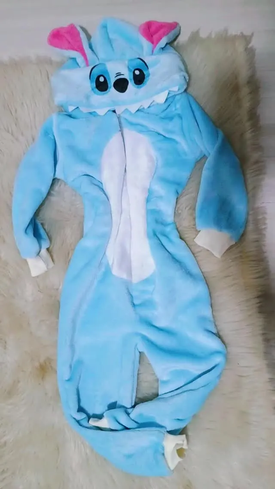
01
Macacões
Peças confeccionadas com atenção ao caimento, acabamento e detalhes.
Ver na galeriaCada peça, um cuidado especial.
Ateliê de costura · Curitiba, PR
Do sob medida aos projetos especiais, cada trabalho carrega cuidado, criatividade e atenção aos detalhes.
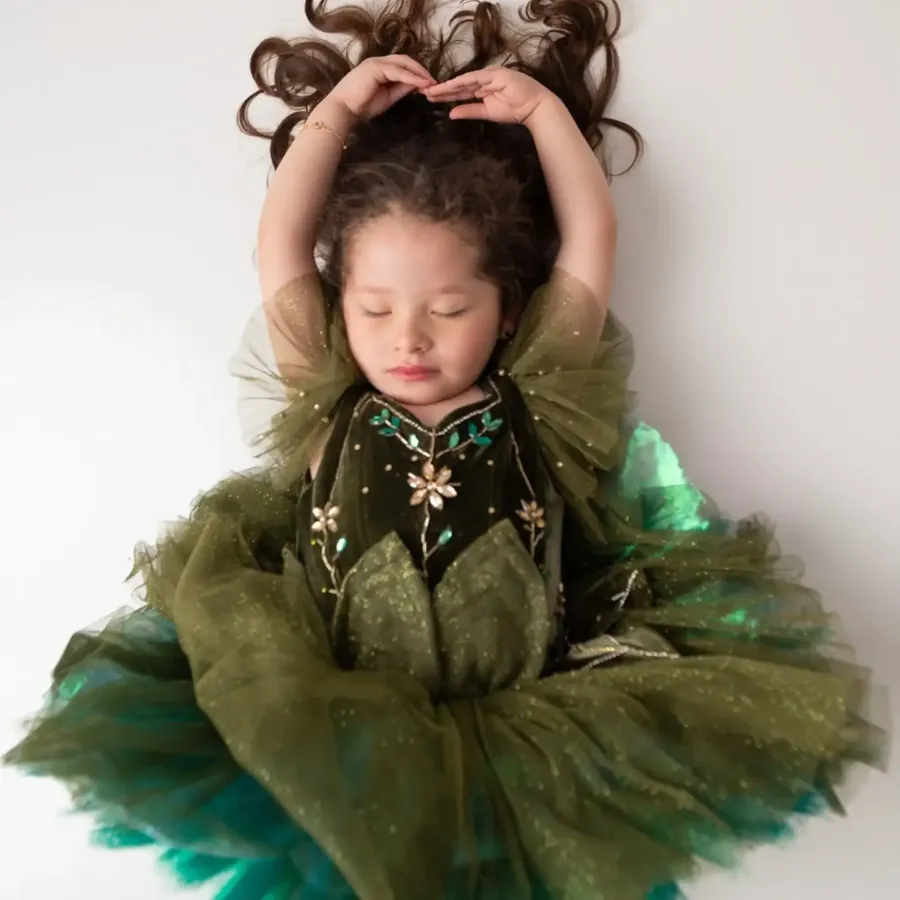

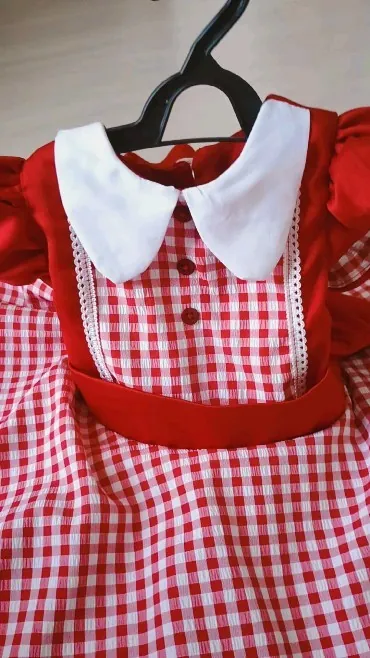

Sobre a Nilda
Sou apaixonada pelo universo da costura e por transformar ideias em peças especiais. Aqui no ateliê, cada trabalho é feito com atenção aos detalhes, dedicação e carinho.
Trabalho com costuras sob medida e diferentes tipos de projetos, sempre buscando transformar cada ideia em uma peça que tenha significado para quem encomenda.
Trabalhos
Cada ideia pede um caminho diferente. Veja o que nasce aqui — e toque em um trabalho para ver as fotos.

Peças confeccionadas com atenção ao caimento, acabamento e detalhes.
Ver na galeria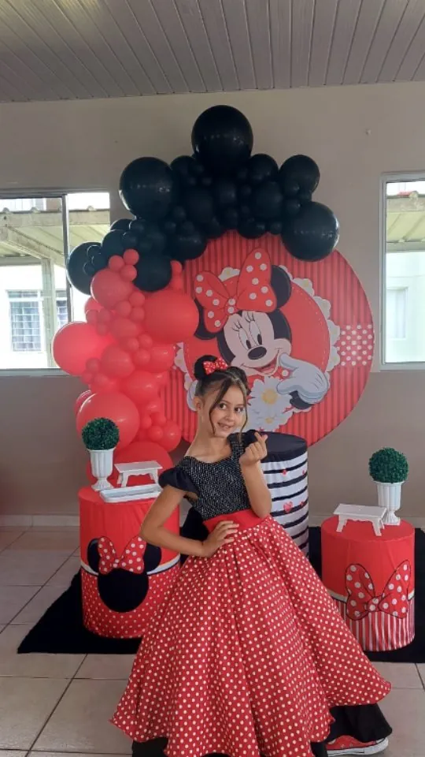
Peças delicadas e personalizadas para diferentes ocasiões.
Ver na galeria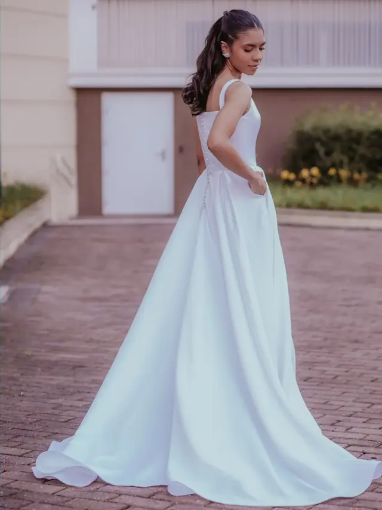
Projetos especiais para momentos únicos, com atenção aos detalhes e à personalização.
Ver na galeria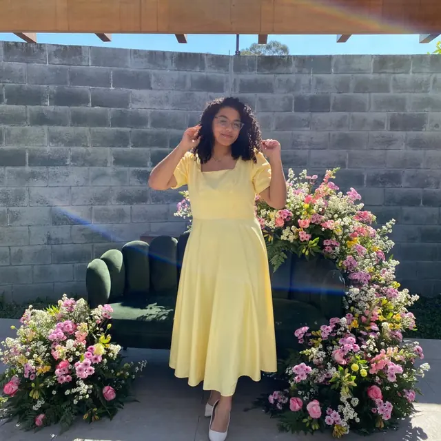
Modelos variados, peças sob medida e projetos personalizados.
Ver na galeria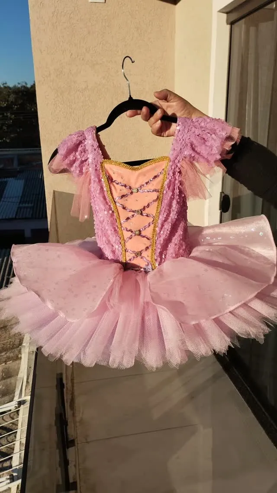
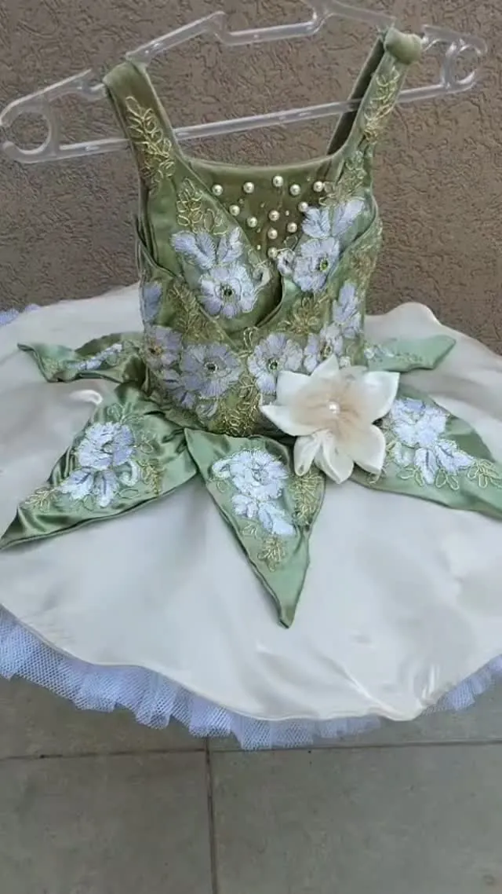
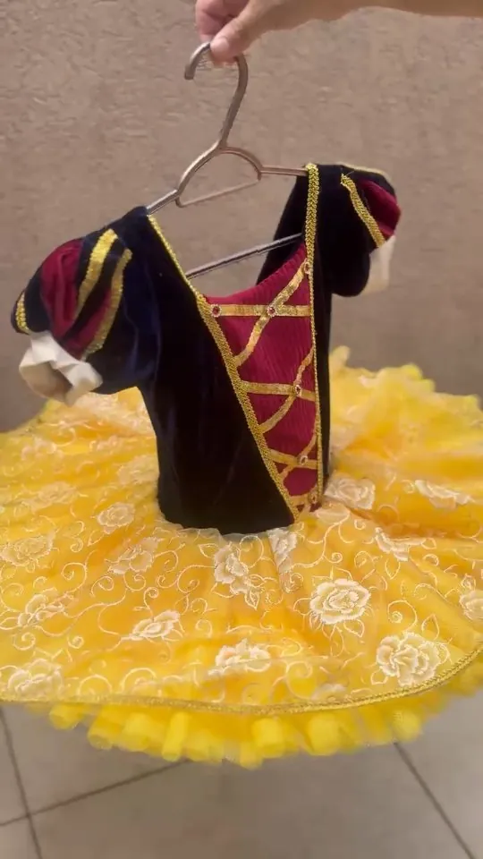
Um universo de peças para bailarinas, incluindo tutus, figurinos e roupas delicadas.
Ver na galeria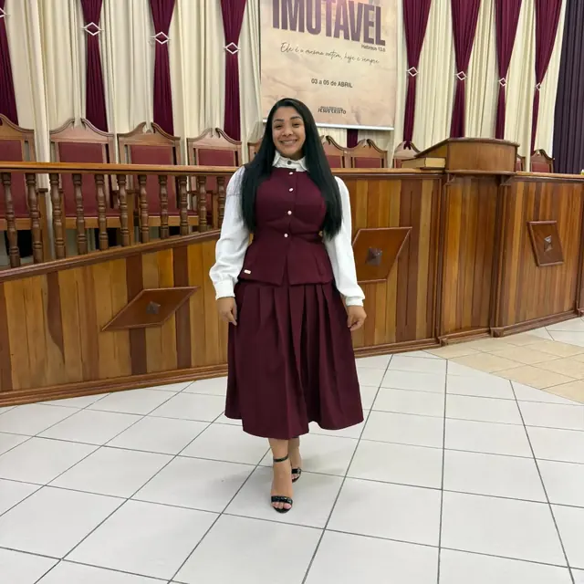
Confecção de diferentes tipos de uniformes, conforme a necessidade do projeto.
Ver na galeria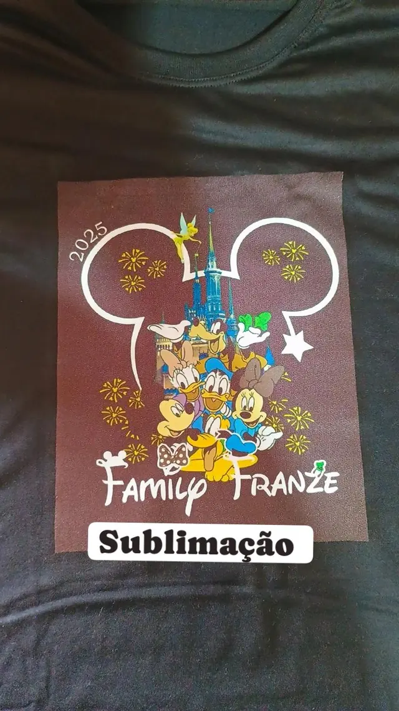
Trabalhos de personalização de roupas por sublimação.
Ver na galeriaGaleria
Fotos reais de peças feitas no ateliê. Toque em uma imagem para ampliar.
Em breve, novas fotos desta categoria.
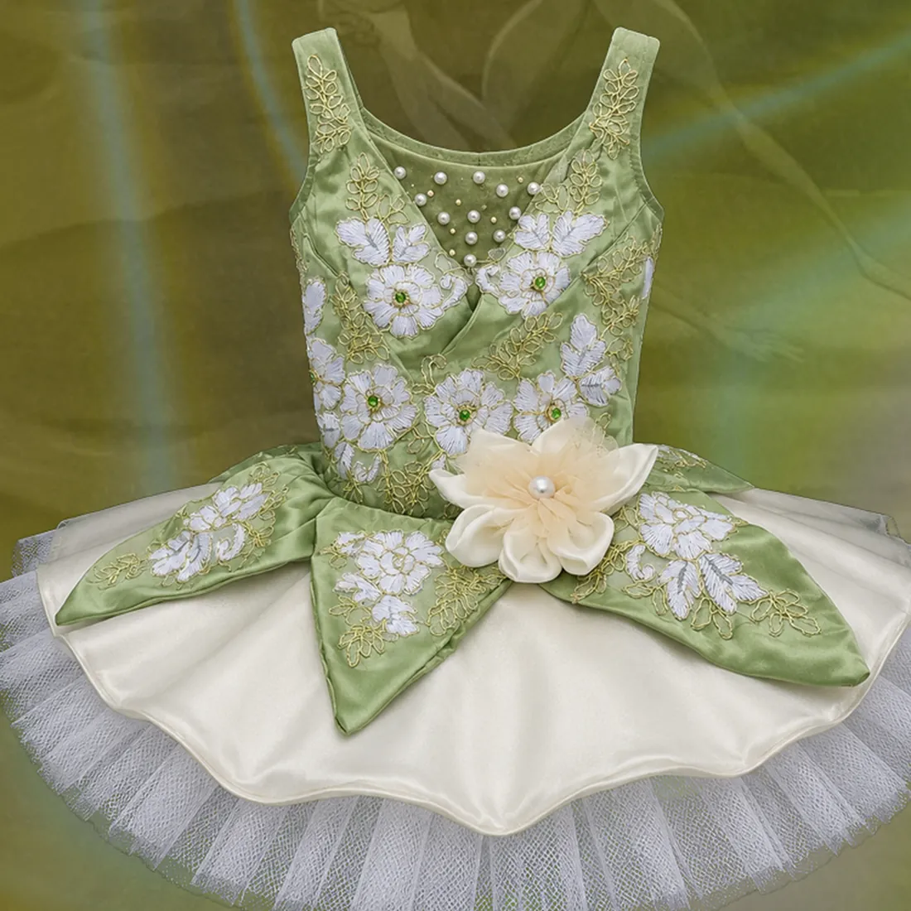
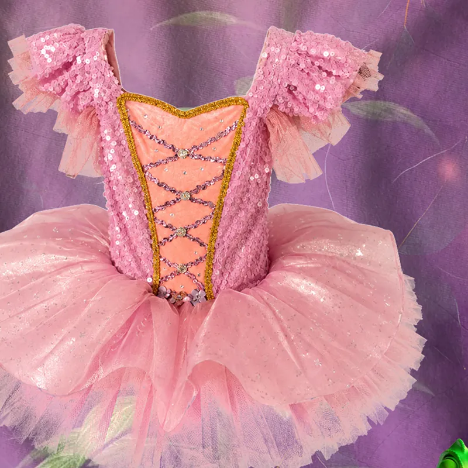
Feito com carinho, pensado nos detalhes
Uma ideia pode se transformar em tantas possibilidades. No Ateliê Nilda Castanho, cada projeto recebe atenção especial, desde a escolha dos detalhes até o acabamento final.
@atelienildacastanho
Aqui compartilho minhas criações, projetos especiais e um pouco do universo da costura.
Contato e encomendas
Se você procura uma peça sob medida ou tem um projeto especial em mente, entre em contato com a Nilda e converse sobre sua ideia.
Curitiba - PR